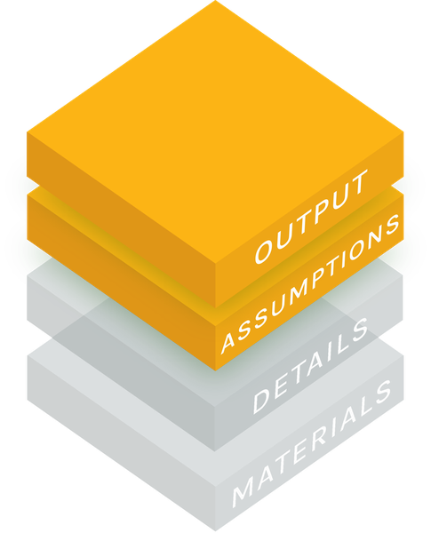

The BSZ analysis (Boll, Saez and Zucman, August 2026) finds that the billionaire tax raises money for California. The JR analysis (Jaros and Rauh, NBER, September 2026) finds that it loses money. This page puts both on one measure, the net fiscal effect: the wealth tax collected, plus extra income tax from asset sales, minus the income tax lost to people who leave.

Today's dollars (present value): what money received or lost in future years is worth now.
Move the BSZ panel's dials to their far ends, term by term from left to right. The D and q terms are those two steps of that walk. Lost income tax is the four loss-box dials of the walk added up (f, C, H and r). The last term is the other three steps added up (W, a and three minor inputs). The Walk the path button in each panel does it for you. The report gives all nine steps.
Each slider moves one disputed input between the two analyses' values. Every dial has its smaller value at the left end and its larger value at the right end, and each end names whose value it is. The BSZ panel starts at the BSZ values, the JR panel at the JR values, so a dial can start at either end. Tap or hover over a symbol or an end for what it means.
The BSZ analysis's main estimate1 (Boll, Saez and Zucman, August 2026)
With these sliders $106.8B
Wealth tax collectedWealth tax collected = 5% × (W − D) × (1 − a) × q
The tax takes 5% of the wealth. W is the wealth on the list, D the part already gone, a the share lost to avoidance, q the chance the tax survives in court. moreThe four dials multiply, so one dial's effect depends on the others. W and D are valued on the same Forbes list.
Income tax lostIncome tax lost = f × C × A(H, r)A(H, r): what $1 a year for H years is worth today at rate r.
f is the share of billionaires' income tax lost, C that tax per year, H the years it is counted, and r the rate that discounts it. moref, C and A(H, r) multiply, so one dial's effect depends on the others. f also moves with D and a.
Starts at the BSZ analysis's net total, $106.8B.
The JR analysis's main estimate1 (Jaros and Rauh, NBER, September 2026)
With these sliders −$39.0B
Wealth tax collectedWealth tax collected = 5% × (W − D) × (1 − a) × q
The tax takes 5% of the wealth. W is the wealth on the list, D the part already gone, a the share lost to avoidance, q the chance the tax survives in court. moreThe four dials multiply, so one dial's effect depends on the others. W and D are valued on the same Forbes list.
Income tax lostIncome tax lost = f × C × A(H, r)A(H, r): what $1 a year for H years is worth today at rate r.
f is the share of billionaires' income tax lost, C that tax per year, H the years it is counted, and r the rate that discounts it. moref, C and A(H, r) multiply, so one dial's effect depends on the others. f also moves with D and a.
Starts at the JR analysis's main estimate, −$39.0B.
Apply to the BSZ panel: each button moves its term's dials to the JR values, or back.
1 Each analysis's own main estimate, defined its own way. The BSZ analysis's is a net total over 5 years: the wealth tax (Table 5 row 1), plus extra income tax from assets sold to pay it, minus the income tax lost to billionaires who leave, for 5 years at 3%. BSZ's own headline is the wealth tax alone; the net total is this OPA's choice, explained on the BSZ analysis overview. The JR analysis's is a perpetuity net present value, averaged over the authors' Monte Carlo draws (Jaros and Rauh, NBER chapter c15504, Tax Policy and the Economy vol. 41, September 2026). The paper prints −$38.9B, the average of one seeded run of 100,000 draws. The exact average of the same formula is −$38.98B, used throughout this page (report, Step 6 of the JR analysis's report).
The net fiscal effect puts both on one definition, and the panels start at its two ends. The BSZ end is $106.8B and the JR end −$39.0B, a gap of $145.8B. The discount rate is a dial: 3% at the BSZ end, the rate the BSZ overview uses, and 2.73% at the JR end, the one rate worth the same as the authors' random draw of it.
Conventions. All amounts are nominal billions of dollars. The wealth tax is counted at face value when assessed and undiscounted, as both analyses do (the BSZ analysis values the base on 1 July 2026; the JR analysis grows its 2025 Forbes base by 7% to 31 December 2026). Present values are at the assessment date, at the rate dial's value. The JR code labels its rate r − g and the text r (the JR analysis's mismatch 3).
Where the numbers come from. Every number on this page is computed by
comparison/R/ from the two analyses' export contracts
(bsz-analysis/export/r/, rjkdc-analysis/export/r/: the files each
pipeline writes for others to read) and the transcriptions in comparison/data/.
The estimating function is score_common() in comparison/R/model.R,
with a Python twin (R and Python agree to 1e-9 on every exported number; see comparison/tests). The browser runs model.js,
a copy of it, and a test runs that copy with node over 600 slider mixes
against the R values, to 1e-9. The report derives each number
step by step and shows the bridge from the BSZ end to the JR end; the
materials page lists the code, tests and files.
Data. ends.csv (the two ends, at
each horizon setting),
slider_sample.csv (300 slider mixes per
panel with their values, the sample the tests run model.js on),
inputs.csv (every disputed input and its sources),
DISPUTES.md
(the crosswalk of the disagreements, one row each, with what each analysis says and where),
dial_path.csv (the terms of the equation at the top, dial by dial),
comparison-data.js (what this page reads).
A test fails if comparison-data.js or this page differs from the generator's
output.
Kinds. Each slider's explanation ends with the kind of its two values: data (settled by observable facts), research (a published estimate), guesswork (asserted without data or a study behind it), guesswork on data (a judgement applied to observed facts), scenario (a choice of which world is estimated) and derived (computed from the analysis's own inputs). "A vs B" reads the BSZ value's kind against the JR value's.
The function. The report states the estimating function line by line. The BSZ panel's sliders move only the BSZ bar and the JR panel's sliders only the JR bar.